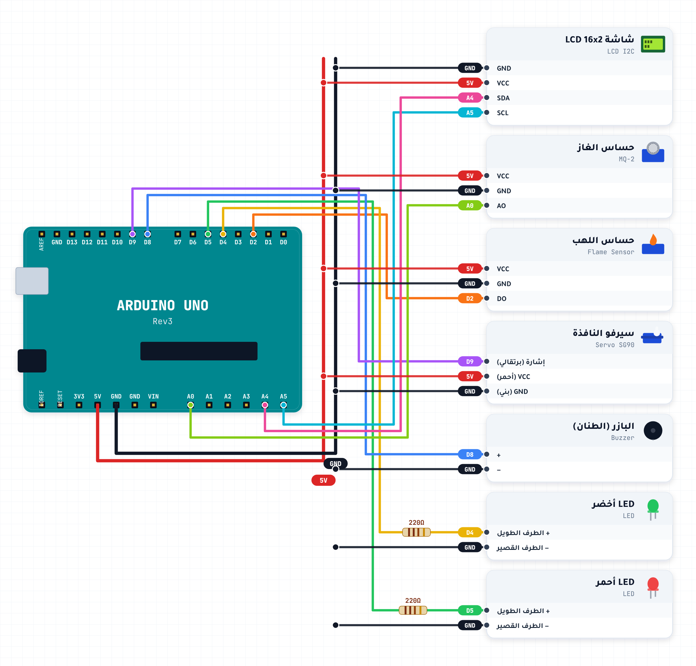

▶فيديو الشرح
حساس غاز وحساس لهب وشاشة وإنذار ونافذة تهوية آلية — كل شيء في برنامج واحد يعمل بالتوازي.
1المكونات
ARDUINO UNOboardشاشة LCD 16x2LCD I2Cحساس الغازMQ-2حساس اللهبFlame Sensorسيرفو النافذةServo SG90البازر (الطنان)BuzzerLED أخضرLEDLED أحمرLEDأسلاك توصيلJumper Wiresلوحة تجاربBreadboard
2مخطط التوصيل

اضغط على المخطط لتكبيره · نسخة SVG عالية الدقة
| القطعة | الطرف | يوصل إلى |
|---|---|---|
| شاشة LCD 16x2 | GND | GND |
| شاشة LCD 16x2 | VCC | 5V |
| شاشة LCD 16x2 | SDA | A4 |
| شاشة LCD 16x2 | SCL | A5 |
| حساس الغاز | VCC | 5V |
| حساس الغاز | GND | GND |
| حساس الغاز | AO | A0 |
| حساس اللهب | VCC | 5V |
| حساس اللهب | GND | GND |
| حساس اللهب | DO | D2 |
| سيرفو النافذة | إشارة (برتقالي) | D9 |
| سيرفو النافذة | VCC (أحمر) | 5V |
| سيرفو النافذة | GND (بني) | GND |
| البازر (الطنان) | + | D8 |
| البازر (الطنان) | − | GND |
| LED أخضر | + الطرف الطويل | D4 عبر مقاومة 220Ω |
| LED أخضر | − الطرف القصير | GND |
| LED أحمر | + الطرف الطويل | D5 عبر مقاومة 220Ω |
| LED أحمر | − الطرف القصير | GND |
3الكود
المكتبات المطلوبة (من Arduino IDE ← Sketch ← Include Library ← Manage Libraries):
- LiquidCrystal I2C — Frank de Brabander
- Servo (مدمجة مع Arduino IDE)
/* المستوى المتقدم — المشروع 7 (الختامي): نظام الأمان الذكي المتكامل كتاب: 38 مشروع في شهر — لؤي النصري (@robotlouay) التوصيل: LCD I2C: SDA → A4 SCL → A5 VCC → 5V GND → GND MQ-2: AO → A0 VCC → 5V GND → GND حساس اللهب: DO → Pin 2 VCC → 5V GND → GND (يعطي LOW عند رؤية اللهب) سيرفو نافذة التهوية: إشارة → Pin 9 (5V و GND) Buzzer (+) → Pin 8 LED أخضر ← 220Ω ← Pin 4 LED أحمر ← 220Ω ← Pin 5 البرنامج لا يستعمل delay() في الحلقة: كل شيء يعمل بالتوازي عبر millis(). */ #include <Wire.h> #include <LiquidCrystal_I2C.h> #include <Servo.h> const int GAS_PIN = A0, FLAME_PIN = 2, SERVO_PIN = 9; const int BUZZER_PIN = 8, GREEN_LED = 4, RED_LED = 5; const int GAS_MARGIN = 150; const unsigned long WARMUP_MS = 60000; LiquidCrystal_I2C lcd(0x27, 16, 2); Servo windowServo; int gasBaseline = 0; long gasSum = 0; int gasSamples = 0; enum State { WARMUP, SAFE, GAS, FIRE }; State state = WARMUP, lastShown = FIRE; unsigned long lastBlink = 0, lastLcd = 0; bool blinkOn = false; void setup() { pinMode(FLAME_PIN, INPUT); pinMode(BUZZER_PIN, OUTPUT); pinMode(GREEN_LED, OUTPUT); pinMode(RED_LED, OUTPUT); windowServo.attach(SERVO_PIN); windowServo.write(0); // النافذة مغلقة lcd.init(); lcd.backlight(); } void showState() { lcd.clear(); lcd.setCursor(0, 0); switch (state) { case WARMUP: lcd.print("Warming up..."); break; case SAFE: lcd.print("Status: SAFE"); break; case GAS: lcd.print("!! GAS LEAK !!"); lcd.setCursor(0,1); lcd.print("Window: OPEN"); break; case FIRE: lcd.print("!!! FIRE !!!"); lcd.setCursor(0,1); lcd.print("Call 198"); break; } } void loop() { unsigned long now = millis(); int gas = analogRead(GAS_PIN); bool flame = digitalRead(FLAME_PIN) == LOW; // 1) تحديد الحالة if (now < WARMUP_MS) { state = WARMUP; if (now > WARMUP_MS - 5000) { gasSum += gas; gasSamples++; } // معايرة آخر 5 ثوانٍ } else { if (gasBaseline == 0 && gasSamples > 0) gasBaseline = gasSum / gasSamples; if (flame) state = FIRE; else if (gas > gasBaseline + GAS_MARGIN) state = GAS; else state = SAFE; } // 2) تنفيذ الاستجابة windowServo.write(state == GAS || state == FIRE ? 90 : 0); digitalWrite(GREEN_LED, state == SAFE); if (now - lastBlink > 200) { // وميض بدون delay lastBlink = now; blinkOn = !blinkOn; } if (state == FIRE) { // إنذار مستمر + أحمر ثابت digitalWrite(RED_LED, HIGH); tone(BUZZER_PIN, 2500); } else if (state == GAS) { // إنذار متقطع + أحمر وامض digitalWrite(RED_LED, blinkOn); if (blinkOn) tone(BUZZER_PIN, 1500); else noTone(BUZZER_PIN); } else { digitalWrite(RED_LED, LOW); noTone(BUZZER_PIN); } // 3) تحديث الشاشة عند تغيّر الحالة فقط if (state != lastShown || now - lastLcd > 5000) { showState(); lastShown = state; lastLcd = now; } }
4كيف يعمل؟
- إحماء ومعايرة حساس الغاز
- غاز → إنذار متقطع + فتح النافذة
- لهب → إنذار مستمر + أحمر ثابت
- الشاشة تعرض الحالة دائماً
⚠ قبل توصيل الكهرباء: راجع كل سلك مع الجدول أعلاه، وتأكد من عدم وجود تماس بين 5V و GND. اختر اللوحة والمنفذ الصحيحين من قائمة Tools في Arduino IDE.